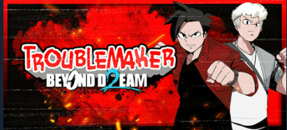

Alur Cerita Singkat
Game ini mengikuti dua karakter utama:
- Budi, protagonis dari game pertama yang kini sudah dewasa.
- Jordan, karakter baru yang bercita-cita membuat bandnya terkenal.
Cerita bergerak antara dunia nyata dan dunia mimpi (Dream World), menghadirkan konflik batin, tantangan emosional, dan pilihan moral yang kompleks. Pemain akan menjelajahi Jayakarta Selatan dalam format semi open-world, dengan gameplay yang mencakup tawuran jalanan, investigasi, mini-games, dan upgrade studio musik milik Jordan.
